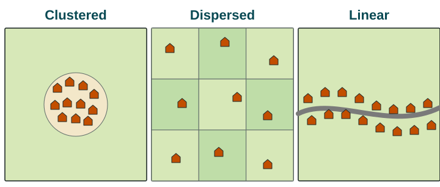

Fly over Iowa and the land looks like a checkerboard. Fly over Quebec's St. Lawrence River valley and you see long, thin ribbons of farmland running back from the water. Fly over rural Virginia and the fields have odd, curving shapes. The differences began with how people first divided and settled the land.
Settlement patterns
A settlement is a place where people live. In farming regions, geographers describe three patterns of rural settlement.
- Clustered settlement (also called nucleated settlement): homes are grouped together in a village, and farmers walk or drive out to fields around it. Many villages in England, India and China follow this pattern. People cluster to share wells and markets, for defense, and to be near a place of worship and neighbors. The cost is a longer trip to the fields.
- Dispersed settlement: homes are scattered, usually one farmhouse on each farm. The US Midwest, a region inside one country, is the classic example. Each family lives on the land it works, but services such as stores and schools are far away.
- Linear settlement: homes line up along a road, river, canal or coast. In Egypt, villages stretch along the Nile and its canals, because the river brings the water that farming needs in the desert.

Survey methods
A survey method is a system for measuring land and marking its boundaries so it can be owned, sold and taxed. Three methods shaped the farmland of the United States and Canada.

Metes and bounds describes a piece of land by distances ("metes") and by natural or human features at its edges ("bounds"): a stream, a large tree, a stone wall. Because the lines follow features, the parcels have irregular shapes. It was used in the original colonies along the East Coast, such as Virginia, and in states later formed from them, such as Kentucky. A limit: when a tree dies or a stream moves, boundaries can be disputed.
Township and range (also called the rectangular survey) divides land into a grid. The Land Ordinance of 1785 told surveyors to mark townships 6 miles on a side, each split into 36 sections of 1 square mile (640 acres). Surveying began in Ohio in the 1780s, and most public land in the Midwest and West was later surveyed this way. The grid is still visible from the air: straight roads about a mile apart, square fields and farmhouses spread across them.
Long lots divide land into narrow strips that run back from a river. French settlers used them along the St. Lawrence River in Quebec and along the bayous of Louisiana. Each family got a short frontage on the river, the main road and water source of the time, and a long strip of land behind it.
| Method | Shape | Where | Settlement it led to |
|---|---|---|---|
| Metes and bounds | Irregular, following features | Eastern US: Virginia, Kentucky | Mixed; irregular field and road patterns |
| Township and range | Square grid | US Midwest and West: Iowa, Kansas | Dispersed farmhouses |
| Long lot | Narrow strips from a river | Quebec; Louisiana | Linear rows of houses along the river |
How the method shapes the landscape
The way land was divided still shapes life today. In Iowa, land sold in squares to single families produced a dispersed pattern, with each farmhouse on its own land and roads on the grid lines. Along the St. Lawrence, long lots put every house on the river, so the settlement became linear. In Virginia, irregular parcels left winding roads and fields of many shapes. A rule to remember: the survey method describes how land was divided; the settlement pattern describes where people live. The first often helped cause the second.
Scale matters when you describe these patterns. At the local scale, one Iowa farm is a single house on a square. Across many states, still a local (subnational) scale because the data are parts of one country, the grid covers much of the Midwest and the Great Plains. At the national scale, the United States shows all three methods, each in the region settled when and by whom it was used.